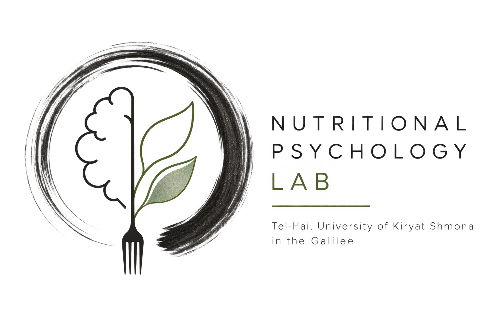
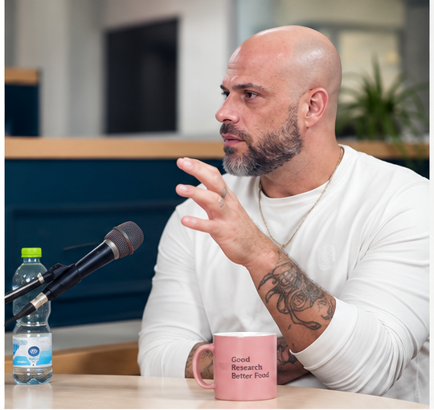

y
Ynet · Hebrew
Learning, environment and the brain
Public-facing discussion of psychology, learning and the brain.
Read ↗
NPL Nutritional Psychology Lab · Tel-Hai University Join NPLInterviews, educational work and broader scholarly engagement by Prof. Omer Horovitz and the Nutritional Psychology Lab (NPL) at Tel-Hai University.
These activities bring research in psychology, nutritional psychology, food and mental health, learning and neuroscience into conversation with broader public and educational audiences.
פרופ׳ עומר הורוביץ · המעבדה לפסיכולוגיה תזונתית · אוניברסיטת תל-חי

A public conversation about the psychological relationship between food, mood and well-being.
Listen to the interview ↗Public-facing discussion of psychology, learning and the brain.
Read ↗Academic consulting for a Hebrew psychology textbook for high-school students.
View book ↗Hebrew scholarly writing connecting memory, life events and neuroscience.
Read PDF ↗Explore the NPL research areas or view publications by Prof. Omer Horovitz and collaborators.